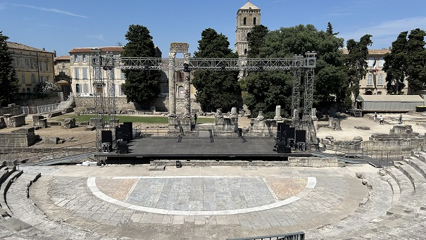
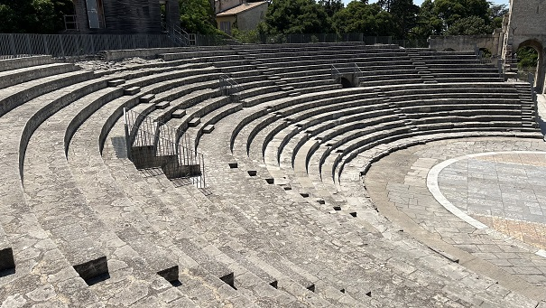
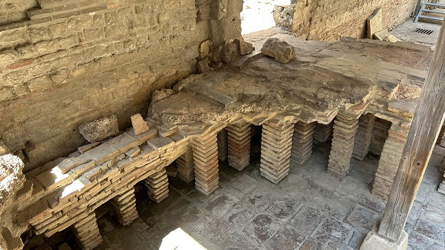
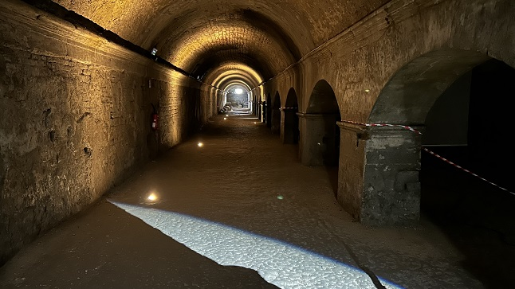
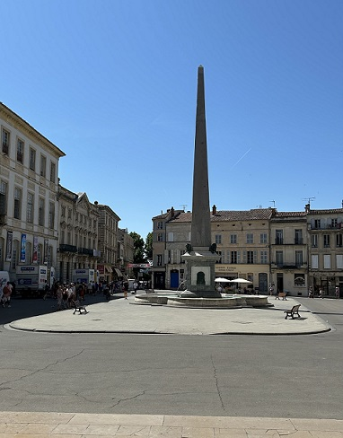

|
El teatro romano data de tiempos de Augusto, a finales del siglo I
a.e.c. Tenía capacidad para unos 10.000 espectadores.
Antes de 1828 no se podía distinguir, oculto por las viviendas,
palacetes y conventos que se habían ido levantando en el espacio que
ocupaba el recinto. Sus materiales fueron reutilizados en edificios
vecinos, como la basílica paleo cristiana de Saint Etienne, a partir
del siglo V. Del escenario, quedan dos columnas corintias conocidas
como las “dos viudas”; en sus muros se integraban estatuas, como la
estatua colosal de Augusto (3m. de altura) encontrada en 1750 o la
Venus de Arlés, actualmente en el Museo del Louvre. De la estructura
de la cavea, se conserva un tramo, utilizado en la Edad Media como
torre defensiva, conocido como la Torre de Rolando.
| |
|
|
 |
 |
| |
|
Las termas romanas de
Constantino se construyeron a principios del siglo IV a las orillas
del Ródano cuando Constantino I, residía en Arlés. Se cree que
osiblemente formaban parte del Palacio de Constantino. Los vestigios
actuales conforman una pequeña parte de la estructura que tenían en
la Antigüedad. Se conservan el ábside semicircular del caldarium y los
muros del tepidarium.

Del foro, que data del 30-20 a.e.c., la única
parte todavía visible es el
criptopórtico,
con unas medidas de 90m de largo por 60m de ancho, formada por tres galerías
subterráneas con bóvedas de cañón. Supuestamente este criptopórtico
servía para sustentar los cimientos del foro. Durante la época
bajoimperial, las galerías sirvieron como granero. A principios del
siglo XX, se descubrieron suntuosas esculturas que están expuestas en el
museo del Arlés Antiguo. Se accede a través del Ayuntamiento de la
ciudad.

Del circo romano se conserva el obelisco
que, en 1676, fue trasladado a la actual Plaza de la República. Fue
instalado en el circo durante las grandes transformaciones
realizadas en el edificio en el siglo IV. Tras su abandono, a partir
del siglo VI, el obelisco se derrumbó y se partió en dos.

La necrópolis romana de Alyscamps
discurría a lo largo de la Vía Aureliana. Los Alyscamps se
convirtieron en un importante enclave cristiano. A su alrededor se
construyeron numerosas capillas e iglesias, que se convirtieron en
lugares de importantes peregrinaciones. Se trata de un lugar, que ha
inspirado a numerosos artistas. Se pueden ver cuadros de Van Gogh y
Gauguin, o leer descripciones en la Divina Comedia de Dante.
Tambiñen aconsejamos visitar su museo
romano y disfrutar de las jornadas romanas que se celebran en
verano.
|